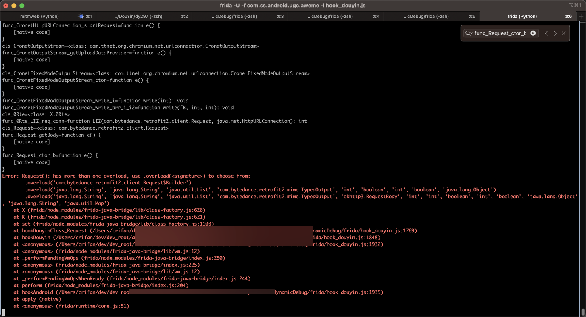

借助崩溃找overload型参数定义
心得概述
如果要hook的函数的，不会写具体的定义
如果是同名的重载的overload类型，则可以：
故意不写具体定义，只写上implementation
然后让frida报错，而告知你多个函数的完整的定义的写法
举例
对于代码：
sources/com/bytedance/retrofit2/client/Request.java
public Request(Builder builder) {
...
public Request(String str, String str2, List<Header> list, TypedOutput typedOutput, int i, boolean z, int i2, boolean z2, Object obj) {
...
public Request(String str, String str2, List<Header> list, TypedOutput typedOutput, RequestBody requestBody, int i, int i2, boolean z, int i3, boolean z2, Object obj, String str3, Map<Class<?>, Object> map) {
...
这个类，有3个构造函数
想要hook，但是对于类的具体定义
尤其是其中一些类，比如：
Builder- 是Request的内部的类
List<Header> listMap<Class<?>, Object> map
等类型，不知道具体的Java的类型如何写
那么就可以故意写成：
var func_Request_ctor_b = cls_Request.$init
...
func_Request_ctor_b.implementation = function (builder) {
完整代码：
// public Request(Builder builder) {
var func_Request_ctor_b = cls_Request.$init
// var func_Request_ctor_b = cls_Request.$init.overload('com.bytedance.retrofit2.client.Request$Builder')
console.log("func_Request_ctor_b=" + func_Request_ctor_b)
if (func_Request_ctor_b) {
func_Request_ctor_b.implementation = function (builder) {
var funcName = "Request(builder)"
var funcParaDict = {
"builder": builder,
}
if (isWeConcernedUrl(this)){
FridaUtil.printFunctionCallAndStack(funcName, funcParaDict)
}
return this.$init(builder)
}
}
运行后触发Frida的崩溃报错，说找不到对应overload的函数
Error: Request(): has more than one overload, use .overload(<signature>) to choose from:
.overload('com.bytedance.retrofit2.client.Request$Builder')
.overload('java.lang.String', 'java.lang.String', 'java.util.List', 'com.bytedance.retrofit2.mime.TypedOutput', 'int', 'boolean', 'int', 'boolean', 'java.lang.Object')
.overload('java.lang.String', 'java.lang.String', 'java.util.List', 'com.bytedance.retrofit2.mime.TypedOutput', 'okhttp3.RequestBody', 'int', 'int', 'boolean', 'int', 'boolean', 'java.lang.Object', 'java.lang.String', 'java.util.Map')
at X (frida/node_modules/frida-java-bridge/lib/class-factory.js:626)
at K (frida/node_modules/frida-java-bridge/lib/class-factory.js:621)
at set (frida/node_modules/frida-java-bridge/lib/class-factory.js:1103)
at hookyyyClass_Request (/Users/crifan/dev/dev_root/androidReverse/xx/x/yyy/dynamicDebug/frida/hook_yyy.js:1769)
at hookyyy (/Users/crifan/dev/dev_root/androidReverse/x/x/yyy/dynamicDebug/frida/hook_yyy.js:1848)
at <anonymous> (/Users/crifan/dev/dev_root/androidReverse/x/x/yyy/dynamicDebug/frida/hook_yyy.js:1932)
at <anonymous> (frida/node_modules/frida-java-bridge/lib/vm.js:12)
at _performPendingVmOps (frida/node_modules/frida-java-bridge/index.js:250)
at <anonymous> (frida/node_modules/frida-java-bridge/index.js:225)
at <anonymous> (frida/node_modules/frida-java-bridge/lib/vm.js:12)
at _performPendingVmOpsWhenReady (frida/node_modules/frida-java-bridge/index.js:244)
at perform (frida/node_modules/frida-java-bridge/index.js:204)
at hookAndroid (/Users/crifan/dev/dev_root/androidReverse/x/x/yyy/dynamicDebug/frida/hook_yyy.js:1935)
at apply (native)
at <anonymous> (frida/runtime/core.js:51)

-》其中列出完全的全部的overload的函数的定义，即：
.overload('com.bytedance.retrofit2.client.Request$Builder').overload('java.lang.String', 'java.lang.String', 'java.util.List', 'com.bytedance.retrofit2.mime.TypedOutput', 'int', 'boolean', 'int', 'boolean', 'java.lang.Object').overload('java.lang.String', 'java.lang.String', 'java.util.List', 'com.bytedance.retrofit2.mime.TypedOutput', 'okhttp3.RequestBody', 'int', 'int', 'boolean', 'int', 'boolean', 'java.lang.Object', 'java.lang.String', 'java.util.Map')
如此，就可以正常去写hook函数了：
// public Request(Builder builder) {
// var func_Request_ctor_b = cls_Request.$init
var func_Request_ctor_b = cls_Request.$init.overload('com.bytedance.retrofit2.client.Request$Builder')
console.log("func_Request_ctor_b=" + func_Request_ctor_b)
if (func_Request_ctor_b) {
func_Request_ctor_b.implementation = function (builder) {
var funcName = "Request(builder)"
var funcParaDict = {
"builder": builder,
}
if (isWeConcernedUrl(this)){
FridaUtil.printFunctionCallAndStack(funcName, funcParaDict)
}
return this.$init(builder)
}
}
// public Request(String str, String str2, List<Header> list, TypedOutput typedOutput, int i, boolean z, int i2, boolean z2, Object obj) {
var func_Request_ctor_9para = cls_Request.$init.overload('java.lang.String', 'java.lang.String', 'java.util.List', 'com.bytedance.retrofit2.mime.TypedOutput', 'int', 'boolean', 'int', 'boolean', 'java.lang.Object')
console.log("func_Request_ctor_9para=" + func_Request_ctor_9para)
if (func_Request_ctor_9para) {
func_Request_ctor_9para.implementation = function (str, str2, list, typedOutput, i, z, i2, z2, obj) {
var funcName = "Request(9 Para)"
var funcParaDict = {
"str": str,
"str2": str2,
"list": list,
"typedOutput": typedOutput,
"i": i,
"z": z,
"i2": i2,
"z2": z2,
"obj": obj,
}
if (isWeConcernedUrl(this)){
FridaUtil.printFunctionCallAndStack(funcName, funcParaDict)
}
return this.$init(str, str2, list, typedOutput, i, z, i2, z2, obj)
}
}
// public Request(String str, String str2, List<Header> list, TypedOutput typedOutput, RequestBody requestBody, int i, int i2, boolean z, int i3, boolean z2, Object obj, String str3, Map<Class<?>, Object> map) {
var func_Request_ctor_13para = cls_Request.$init.overload('java.lang.String', 'java.lang.String', 'java.util.List', 'com.bytedance.retrofit2.mime.TypedOutput', 'okhttp3.RequestBody', 'int', 'int', 'boolean', 'int', 'boolean', 'java.lang.Object', 'java.lang.String', 'java.util.Map')
console.log("func_Request_ctor_13para=" + func_Request_ctor_13para)
if (func_Request_ctor_13para) {
func_Request_ctor_13para.implementation = function (str, str2, list, typedOutput, requestBody, i, i2, z, i3, z2, obj, str3, map) {
var funcName = "Request(13 Para)"
var funcParaDict = {
"str": str,
"str2": str2,
"list": list,
"typedOutput": typedOutput,
"requestBody": requestBody,
"i": i,
"i2": i2,
"z": z,
"i3": i3,
"z2": z2,
"obj": obj,
"str3": str3,
"map": map,
}
if (isWeConcernedUrl(this)){
FridaUtil.printFunctionCallAndStack(funcName, funcParaDict)
}
return this.$init(str, str2, list, typedOutput, requestBody, i, i2, z, i3, z2, obj, str3, map)
}
}